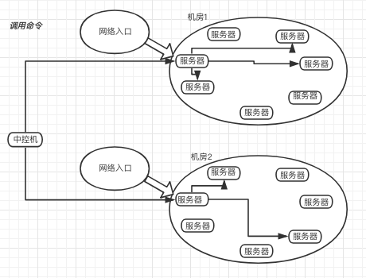
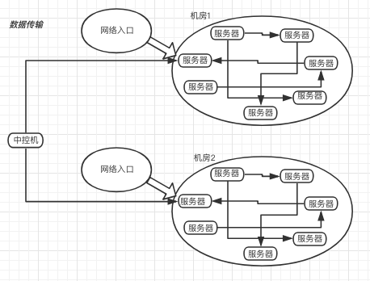
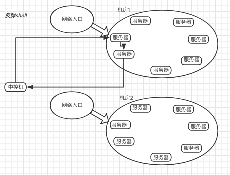

1. 网络代理
截止到上一节，您已经可以方便的在同机房内进行批量的操作、传输文件和获取远程shell。但是真实的网络环境可能很复杂。您的机器可能分布在多地区的多个机房，或者在网络不通的公有云的region中。这个时候就需要配置代理。
2. 三种网络拓扑
- 每个服务器都安装了mydan并且启动了agent，网络隔离的情况下，每个区域都选择一两台作为代理的角色，让中控机的控制流量从入口进去
2.1. 远程命令

- 批量操作会根据区域分布情况，把任务切割成每个区域一个，让任务在入口服务器执行，执行结束后结果汇总到中控机
2.2. 同步文件

- 同步工具指定的源机器和目标机器都可以是多个
- 如果一个区域内即有源机器又有目标机器，数据同步的过程就会在本区域内完成，中控机只是发了一个调度任务到入口机器，入口机器来完成该区域的数据调度传输
- 如果一个区域只有源机器没有目标机器，这个区域的同步任务会被跳过
- 如果一个区域内没有源机器只有目标机器，中控机器会在有数据的区域通过入口服务器的网络把数据下载一份到中控机，中控机在把这个数据通过该区域的入口服务器把数据推到该区域的其中一台机器，然后在让这个区域内的服务器进行内部同步
- 默认情况下所有的agent的文件缓存功能都是打开的，文件传输过程中所有的经过服务器的文件都会缓存到默认路径/opt/mydan/var/run/filecache 下。如果不需要缓存功能，可以把这个目录删除
2.3. 远程shell

- 中控机器mydan shell打来一个临时的端口等待反弹shell过来连接
- 获取远程shell的指令会通过入口服务器把指令发送到要获取的服务器上
- 反弹shell通过公网把shell反弹到中控机
- 考虑到有些机器是不可以上公网的，如果多区域情况下，中控机可能在别的机房，服务器的tcp直接通过公网连接到中控机连接不上，这时候需要shellv2， v2版本的shell在中控机不需要公网ip，被操作的机器也不需要可以上公网
3. 配置
新建和编辑文件 /opt/mydan/etc/agent/proxy.private
[root@feng-pc ~]# cat >> /opt/mydan/etc/agent/proxy.private << EOF
192.168.0.0/16 : 10.10.0.1
219.111.192.0/18 : 10.10.0.1
EOF
- mydan会通过这个配置的信息，把需要代理的服务器进行划分，如果机器被影射到同一个代理中，这些机器就会被当作一个区域。